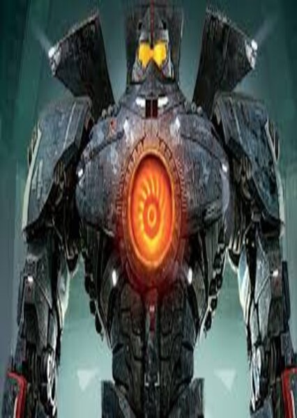

Gipsy
Striker
Reator Nuclear Duplo
Titanio Puro
Canhão De Plasma
2 Espadas
Queima De Gasolina Para Voar E Tostar
Propulsão De Cotovelos
Mark III
Analógico
1850 toneladas
Mark V
Espadas Em Ambos Os braços
Velocidade
6 Canhões No Peitoral
100% Digital
Agilidade